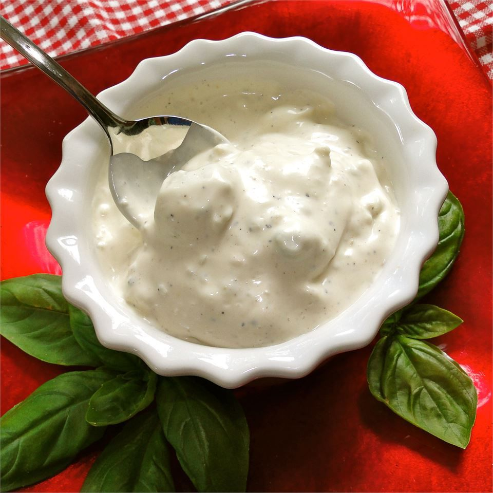

Home
Blue Cheese Dressing

Blue Cheese Dressing Recipe I use for dipping chicken into. Very nice.
Ingredients
- 75g or 1/3c buttermilk
- 60g or 1/4c sour cream
- 15g or 1Tbsp lemon juice
- ½ clove garlic or about ¼ of a rinsed shallot
- 5g or 1tsp salt
- 1 egg yolk
- 300g or 1 1/3c neutral oil (light olive, avocado, canola, etc)
- 100g or 3.5oz blue cheese
Preparation Steps
-
Add all ingredients except cheese and oil to high sided container. Blend with immersion blender. When combined, slowly stream in oil until emulsified.
-
Add about 50g (or ½ of the blue cheese) and blend until it’s mixed into the dressing. Add another 50g (or less if you don’t LOOVE blue cheese) and stir into dressing.